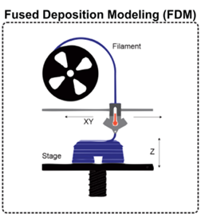

The use of 3D printing as a form of additive manufacture has been vital to mechanical engineering over the course of its existence. This article will outline the history, development and how 3D printing is currently used. 3D printing is an important tool when being used to prototype for engineering, it allows for scale tests for a reduced cost and reduces the cost drastically when compared to CNC machined parts. This has greatly improved the speeds that engineers can work at. It can also be used for soft robotics due to its ability to form compliant mechanisms.
Introduction
For the past 40 years since Dr. Hido Kodama (Chapman, A. (2022).) invented one of the first rapid prototyping machines, which formed its prints layer by layer with resin hardened by UV light. In 1989 Scott Crump patented Fused Deposition Modelling (see figure 1), the basis for Fused Filament Fabrication (FFF) or what most people would consider conventional 3d printing. Since this point 3D printing slowly evolved until 2004. In 2005 the rise of an open-source initiative founded by Dr. Adrian Bowyer, The RepRap Project, a 3d printer capable of self-replicating. “RepRap is thus a kinematic assisted self-replicating self-manufacturing machine.” (Jones, R. et al. (2009).), this allowed enthusiasts to get their hands on 3d printers for the first time as the cost associated dropped from thousands to about £500, this changed the widespread ownership as owning a 3D printer was outside the budget of most enthusiasts.

Diagram showing Fused Deposition modeling (Gul, J. Z. et al. (2018))
Analysis and discussion
3D printing has revolutionised the Mechanical engineering industry, the use of Fused Filament Fabrication (FFF) has greatly: sped up the production, decreased the cost and improved the accuracy of iterative prototyping. Designs can be created in CAD software; this has greatly improved the design iteration as part of the design process as prototypes can be produced at every stage of its developmental journey.
Direct Metal Laser Sintering (DMLS), a form of additive manufacturing allows for the 3D printing of metal, this has allowed engineers to finalise designs with highly accurate parts made from iron, stainless steel and titanium alloys. This has reduced the need for cnc machines, which often require highly skilled workers which increases lead times for metal parts. The price of CNC is incredibly high as it is a reductive manufacturing process, this requires a blank much larger than the object, which is then reduced, producing waste, which is often disposed of as scrap, this can often be greater than 50% of the material used for the blank. The wear on the toolheads that remove the material is also a very expensive as CNC machine cutting bits are often made from high-speed steel and tungsten carbide which have high costs due to their complicated manufacturing process. Decreased complexity allows for easier maintenance as General Electric aircraft fuel nozzles used to consist of 25 individual pieces but now can be formed from one (Sheng, R. (2022).). this has also increased the strength of the device fivefold. Quality control takes a shorter amount of time as the whole device can be replaced as a single part if there is a failure or fault with its mechanism.
Due to the large range of materials that can be used in 3D printing, 3D printing has proved useful in the manufacture and the advancement of soft robotics as “ 3D printing can deliver parts of very sophisticated and complex geometries with no need of post-processing, built from custom-made materials and composites with near-zero material waste, while being applicable to a diversity of materials, including smart materials such as shape memory polymers and other stimulus-responsive materials.” (Gul, J. Z. et al. (2018)) Most of soft robotics inspiration comes from natural mechanisms, so the materials these robots are constructed from must be able to elastically deform, using the 3d printing process of Stereo lithography, liquid resin can be used to fabricate deformable structures often controlled by air pressure or pneumatics. This was taken from spiders that use pneumatics to control their limbs (Odeen-Isbister, S. (2022).) Scientists from the university of Texas were able to inflate and deflate the spiders using a syringe full of air to pick up small objects that weighed 1.3 times their body weight. The use of compliant mechanism is also used in soft robotics allowing for the scaling of force across the small mechanisms to increase their useful power output, 3d printing is used for their fabrication as TPU (Thermoplastic polyurethane) is a special kind of plastic that is flexible after it has been printed, allowing for less ridged structures to be printed, i.e. plastic hinge mechanisms for the soft robots.
Concrete can be printed to form structures as a form of fused deposition printing, however this has several challenges “the material needs to be fluid, in order to be easily pumped towards the printing unit, and in order to properly compact and fully fill the print volume during the time the concrete is still supported by the print head. However, as soon as the print head is no longer supporting the material, the concrete should be stiff enough” (De Schutter, G. et al. (2018).). To solve this problem the concrete must be specially formulated to have a thixotropic behaviour (Thixotropic behaviour means that materials will exhibit a decrease in viscosity under applied stress and becoming less viscous when not under stress.) as well as able to dehydrate at the correct time. This process has several applications: it can be used to construct buildings, such as small houses, this is useful as its quality is identical across every building it constructs, this will change the way labour works in construction (Pertusini, G. (2023).). as these 3d printed houses are not limited to labour shortages.
Conclusion
From the initial patents in 1989 to the current day, 3D printing has been evolving and growing at an exponential rate. 3D printing has accelerated the prototyping and production stage of mechanical engineering, soft robotics and aerospace engineering. It has also improved the strength, cost, quality control and maintenance processes of these engineering fields. 3D printings impact has been profoundly widespread in other engineering fields too from the 3d printing of prosthetics in biomechanical to printing moulds for teeth for dentures.
References
Table of references
1. Chapman, A. (2022). The complete history of 3D printing. [online] UltiMaker. Available at: https://ultimaker.com/learn/the-complete-history-of-3d-printing/.
2. Gul, J. Z. et al. (2018) 3D printing for soft robotics - a review. Science and technology of advanced materials. [Online] 19 (1), 243–262.
3. Jones, R. et al. (2009). RepRap -The Replicating Rapid Prototyper. (n.d.). Available at: https://reprap.org/mediawiki/images/d/da/Jones-et-al-paper.pdf.
4. Sheng, R. (2022). 3D Printing, A Revolutionary Process for Industry Applications. [online] Available at: https://www.sciencedirect.com/science/article/pii/B9780323994637000165.
5. Gul, J. Z. et al. (2018) 3D printing for soft robotics - a review. Science and technology of advanced materials. [Online] 19 (1), 243–262.
6. Odeen-Isbister, S. (2022). Dead spiders pumped full of air by scientists to create gripping tools. [online] Daily Mirror. Available at: https://www.mirror.co.uk/news/us-news/dead-spiders-pumped-full-air-27609437 [Accessed 24 Nov. 2025].
7. De Schutter, G. et al. (2018) Vision of 3D printing with concrete — Technical, economic and environmental potentials. Cement and concrete research. [Online] 11225–36.
8. Pertusini, G. (2023). Will 3D printed homes lead to a workforce revolution? [online] ww3.rics.org. Available at: https://ww3.rics.org/uk/en/modus/built-environment/construction/cobod-machines-3d-printing-homes.html.